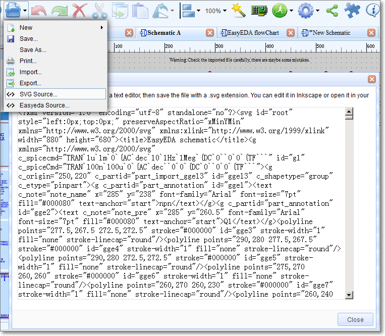
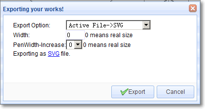
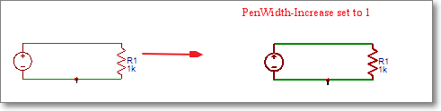
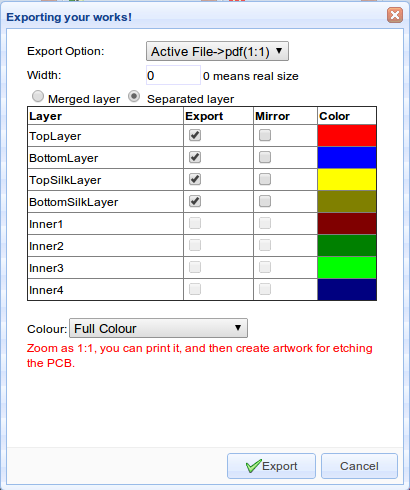
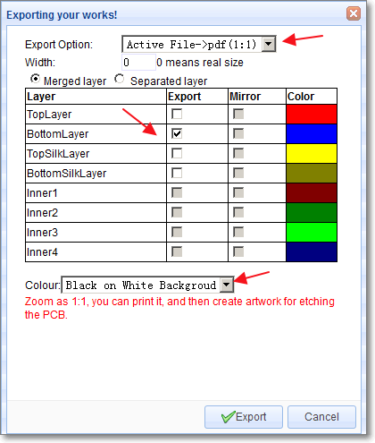
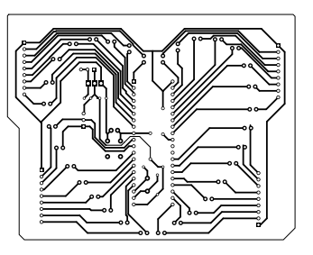
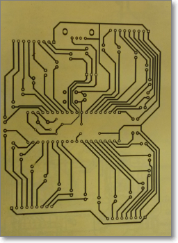
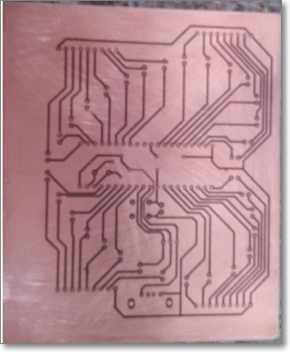
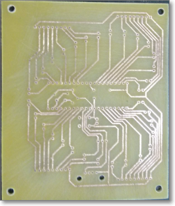
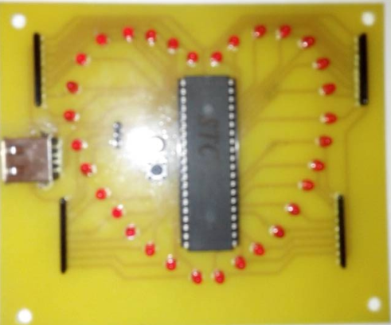

Export
For documentation and other purposes, you can export your Schematic and PCB designs to the following formats:- EasyEDA Source
- SVG Source
- SVG
- Image(Png)
SVG Source
You can create an SVG sourcefile via:
Document > SVG source...
then copy the contents of this box into a text editor and save the file with a .svg extension. You can edit it in Inkscape or open it in your browser.
This solution doesn’t need an internet connect so if you open EasyEDA offline, you can use it.

General Exporting
Exporting Schematics.
Using:
**Document > Export… **
you can open this dialog:

From here you can choose to export your design to SVG, image (.png) and Pdf file format.
For all file formats:
Width: 0 is a 1:1 export of your image, higher numbers zoom your image.
PenWidth-Increase: 0 represents a default line width of 1 pixel; if you set this to 1, the line will be 2 pixels. This is illustrated in the image below.

Exporting PCB designs
Exporting in documentation formats
Exporting a PCB design or footprints from EasyEDA is very similar to exporting a Schematic or a Symbol.
Using:
Document > Export…
you can open this dialog:

You can select to export in pdf, drawing (.png) or SVG format.
You can select to print individual layers or selected layers merged into a single file.
It is also possible to mirror selected layers for example to show bottom layers in easily readable orientation.
Print For Etching
If you don’t want to order your PCBs from EasyEDA then maybe - for single and double sided PCB designs - you might like to try like using some home made PCB tech:
http://hackaday.com/2012/12/10/10-ways-to-etch-pcbs-at-home/
So here’s how you can print your PCB layer by layer and then etching it onto a PCB.
Step 1) Export it to Pdf

Make sure the Colour is Black on White Background
Step 2) Open the pdf file in a viewer

Step 3) Print it to paper

Step 4) Copy it to the copper

Step 5) Etch it.
Step 6) Drill it ...

Step 7) Get your soldering iron out!
